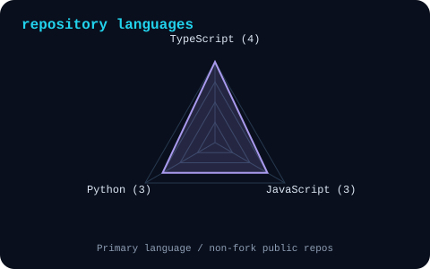

Eden Chang
Technical Product Manager / Curious builder
This is me :)
Hi, I'm Eden, a technical product manager with a background in industrial design, metalwork and exhibition planning. I connect product planning, user experience and front-end implementation.
- Planning: turn loose requirements into a clear product structure.
- User experience: connect interface screens with the actions people take.
- Collaboration: bring users, business and engineering into a shared plan.
- Front-end: connect interface decisions with implementation.
my working stack
signals

|
 |
a few numbers

Curious builder / @eden0118